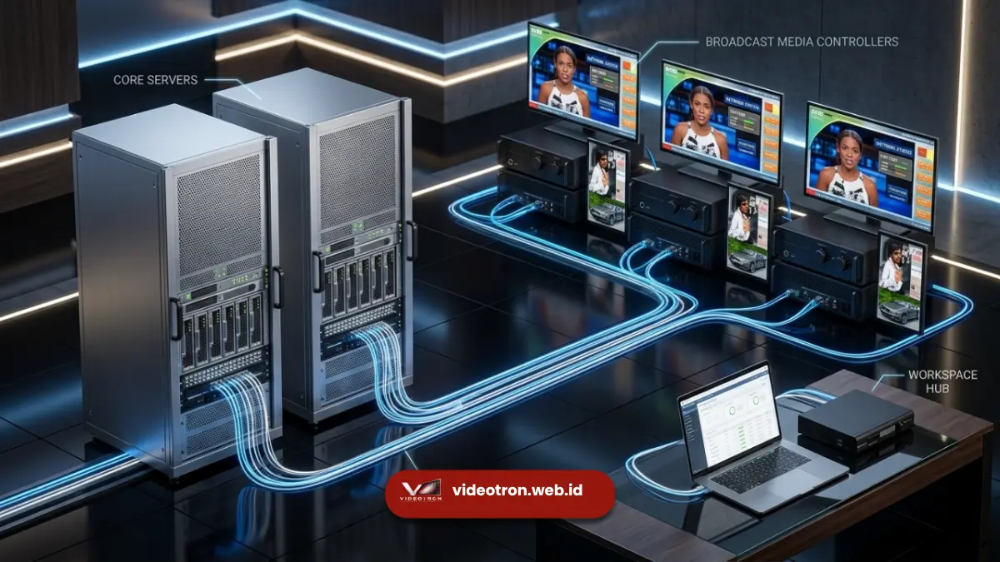

Teknologi videotron informasi publik menggunakan panel LED luar ruang tahan cuaca dengan sistem manajemen konten terpusat berbasis cloud untuk memperbarui tayangan secara real-time.
- Menggunakan modul lampu LED berteknologi DIP atau SMD yang memiliki kecerahan ultra tinggi.
- Memiliki sertifikasi pelindungan cuaca (Ingress Protection) minimal IP65 terhadap air dan debu.
- Dikendalikan oleh peranti lunak Content Management System untuk distribusi data jarak jauh.
- Memerlukan keamanan siber berlapis untuk mencegah peretasan konten publik.
Delapan puluh dua persen videotron publik kini telah menggunakan teknologi cloud CMS sepenuhnya untuk manajemen konten jarak jauh. Adopsi panel LED hemat energi generasi baru berhasil menurunkan konsumsi daya operasional pemerintah daerah hingga tiga puluh lima persen.
Bagaimana Spesifikasi Teknis Layar Videotron Publik?
Layar videotron publik membutuhkan spesifikasi tingkat kecerahan minimal enam ribu nits, rasio penyegaran tinggi, dan perlindungan cuaca standar IP65 agar beroperasi maksimal di luar ruangan.
Spesifikasi perangkat keras adalah fondasi utama dari layar informasi publik. Kerapatan jarak antar titik lampu, atau yang dikenal sebagai Pixel Pitch, menentukan ketajaman gambar. Untuk videotron di pinggir jalan raya, standar yang umum digunakan adalah P4, P5, hingga P8 (jarak 4mm hingga 8mm antar lampu). Semakin kecil angkanya, semakin tajam gambarnya dari jarak dekat.
Selain ketajaman, tingkat kecerahan (brightness) mutlak diperhatikan. Sinar matahari siang hari sangat kuat, sehingga videotron memerlukan tingkat kecerahan minimal 6.000 hingga 10.000 nits agar gambar tidak terlihat gelap. Ketahanan terhadap lingkungan ekstrem dipastikan melalui sertifikasi IP65 atau IP68, yang menjamin komponen elektronik di dalam layar tidak rusak meskipun dihantam hujan lebat, debu jalanan, dan suhu panas ekstrem yang berkesinambungan.
Bagaimana Sistem Manajemen Konten (CMS) Bekerja?
Sistem manajemen konten bekerja dengan memungkinkan operator menjadwalkan, mengunggah, dan mendistribusikan berkas multimedia dari peramban web langsung ke pemutar media pada videotron.
Teknologi Content Management System (CMS) mengubah cara pemerintah mendistribusikan informasi. Tanpa CMS, teknisi harus mendatangi tiang videotron satu per satu menggunakan flash drive untuk mengganti video. Dengan sistem ini, pengelola cukup duduk di ruang kendali atau kantor dinas. Melalui dasbor CMS, operator membagi layar ke dalam beberapa zona (misalnya: zona video utama, zona teks berjalan di bawah, dan zona logo).
Operator dapat menetapkan playlist tayangan yang akan berputar otomatis. Sistem juga menyediakan laporan status secara langsung, memberitahu teknisi jika suhu layar terlalu panas atau jika terjadi kehilangan koneksi internet di titik tertentu, sehingga perbaikan dapat diinisiasi lebih awal.
Apa Saja Fitur Keamanan Sistem Videotron?
Fitur keamanan sistem videotron mencakup enkripsi data jaringan, otentikasi dua faktor untuk akses operator, serta isolasi jaringan lokal virtual untuk mencegah intrusi.
Keamanan siber menjadi prioritas absolut bagi videotron yang menayangkan informasi publik. Jika berhasil diretas, layar besar ini dapat disalahgunakan untuk menayangkan informasi palsu atau konten tidak senonoh yang memicu kepanikan sosial. Oleh karena itu, koneksi antara CMS dan media player diamankan menggunakan teknologi Virtual Private Network (VPN) dan protokol HTTPS terenkripsi.
Akses ke ruang kendali CMS dibatasi hanya untuk staf berwenang menggunakan otentikasi biometrik atau verifikasi dua langkah (2FA). Sistem keamanan perangkat keras juga memblokir akses fisik pada media player, seperti menonaktifkan port USB eksternal, sehingga pihak tak bertanggung jawab yang mencoba memanjat struktur videotron tidak dapat menyuntikkan program jahat (malware) secara langsung ke mesin.

Berapa Konsumsi Daya Videotron Outdoor?
Konsumsi daya videotron outdoor berkisar antara tiga ratus hingga delapan ratus watt per meter persegi, tergantung pada tingkat kecerahan layar dan usia teknologi panelnya.
Layar digital raksasa tentu membutuhkan pasokan listrik yang signifikan. Sebuah videotron berukuran 4x8 meter (32 meter persegi) dapat mengonsumsi listrik hingga puluhan ribu watt pada kapasitas puncak di siang hari. Oleh sebab itu, panel listrik khusus berkapasitas besar selalu disediakan di lokasi instalasi, lengkap dengan sistem penangkal petir dan penstabil tegangan (stabilizer).
Teknologi terbaru mulai menerapkan modul penghemat daya pintar (smart power saving). Modul ini bekerja bersama sensor cahaya ambien. Saat mendeteksi cuaca mendung atau malam hari, sistem secara otomatis menurunkan suplai tegangan ke lampu LED. Hal ini tidak hanya memperpanjang usia komponen elektronik akibat suhu yang lebih dingin, tetapi juga menghemat tagihan listrik pemerintah secara dramatis setiap bulannya.
Pemahaman tentang teknologi ini dapat Anda pelajari lebih lanjut di panduan lengkap videotron informasi publik yang sangat vital dalam memastikan kontinuitas penyebaran informasi pemerintah.
Kualitas perangkat keras seperti panel LED tahan cuaca dan pixel pitch yang tepat memastikan pesan terbaca jelas, sementara infrastruktur perangkat lunak CMS dan protokol keamanan jaringan memastikan sistem beroperasi tanpa hambatan dan kebal dari ancaman siber. Investasi awal yang sedikit lebih tinggi pada teknologi panel hemat energi (smart power) akan memberikan keuntungan jangka panjang berupa efisiensi biaya operasional yang sangat signifikan bagi kas daerah.

Hawa Nadira
LED Technology Consultant dan Visual Educator
Konsultan dan spesialis solusi display digital berdedikasi tinggi yang fokus membagikan panduan edukatif mengenai penerapan teknologi layar LED videotron untuk kebutuhan interior modern di Indonesia.